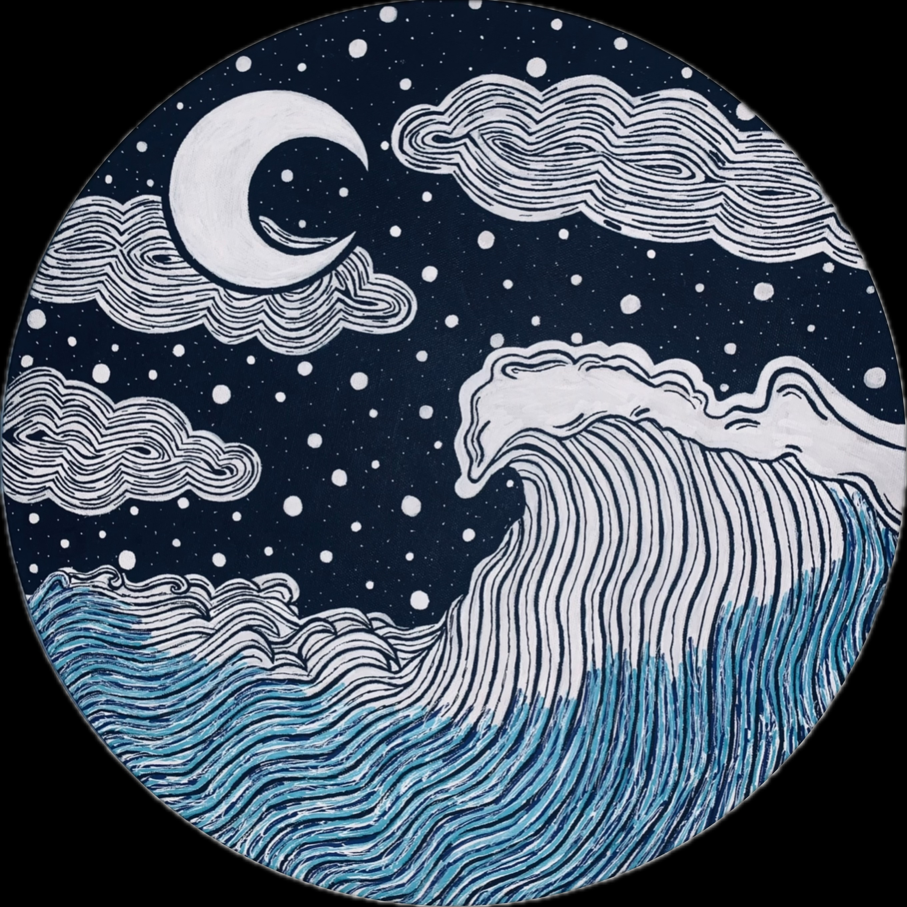
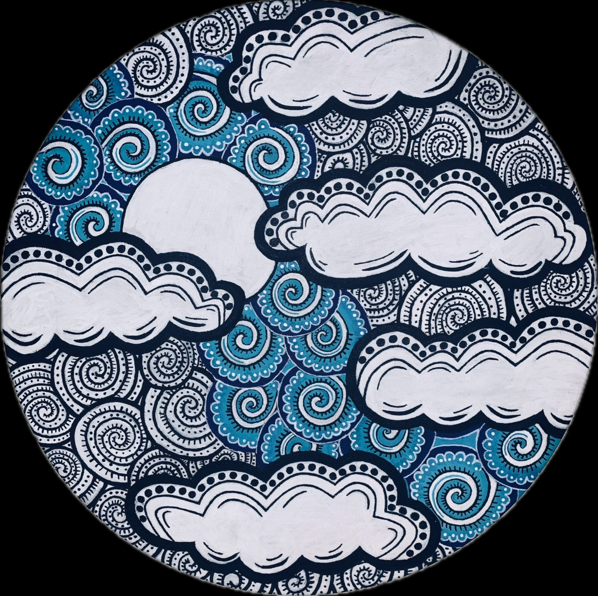
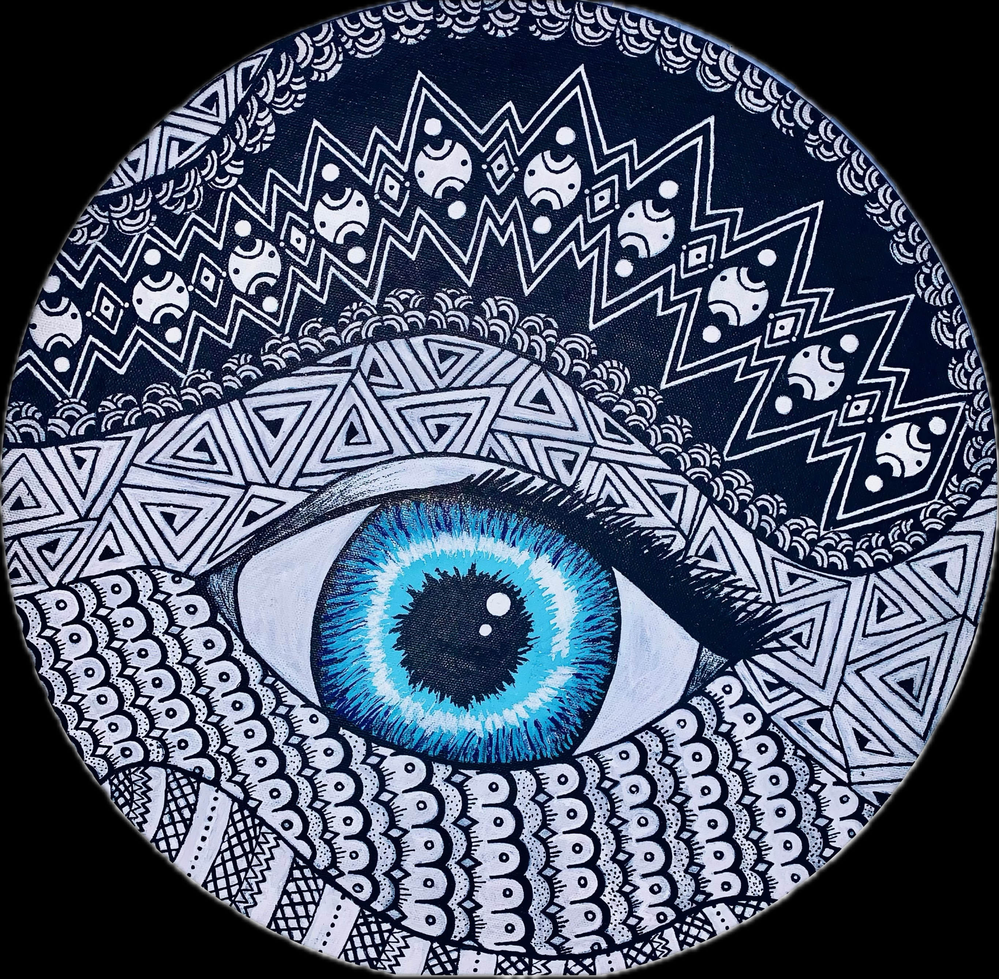

Growing up, I slowly realized that my imagination and love for the arts were not just hobbies but essential parts of who I am. Becoming an artist has arrived in waves—sometimes gentle, sometimes overwhelming, though accepting this came doubt, self-discovery, and breakthrough. But each passing wave has carried me closer to fully embracing my passion. This piece embodies the quiet revelation that art is not only what I create but also what sustains me, defines me, and drives me to continue exploring the world through a lens uniquely my own.

My journey toward acceptance, determination, and alignment in pursuing a life devoted to art. Guided by an inspiring art teacher, I was able to hone my skills, discover my strengths, and shape an educational path that nurtured my passion. Figuratively, the painting embodies my own light—my creativity, curiosity, and ambition—seeking to shine through and illuminate the path that connects my education with my love for the arts. The beam of light traveling through the sky represents the clarity and purpose that comes when guidance, Dedication and passion converge, and the moment when I fully embrace the career and life I was meant to pursue.

The eye itself mirrors my own vision—wide open, alert, and focused on the path I first discovered when I realized my love for the arts. The blue pupil symbolizes light and presence, showing that my creativity, drive, and purpose are steadfast and will not fade or wander. Drawing on my Latina heritage, I included the evil eye as a protective element, a shield to ward off negativity and ensure that nothing—external or internal—can derail my journey. This painting reflects both my personal growth and my resilience: it is a visual declaration that my vision is strong, My light is enduring, and my commitment to becoming the artist I intended to be remains unwavering.